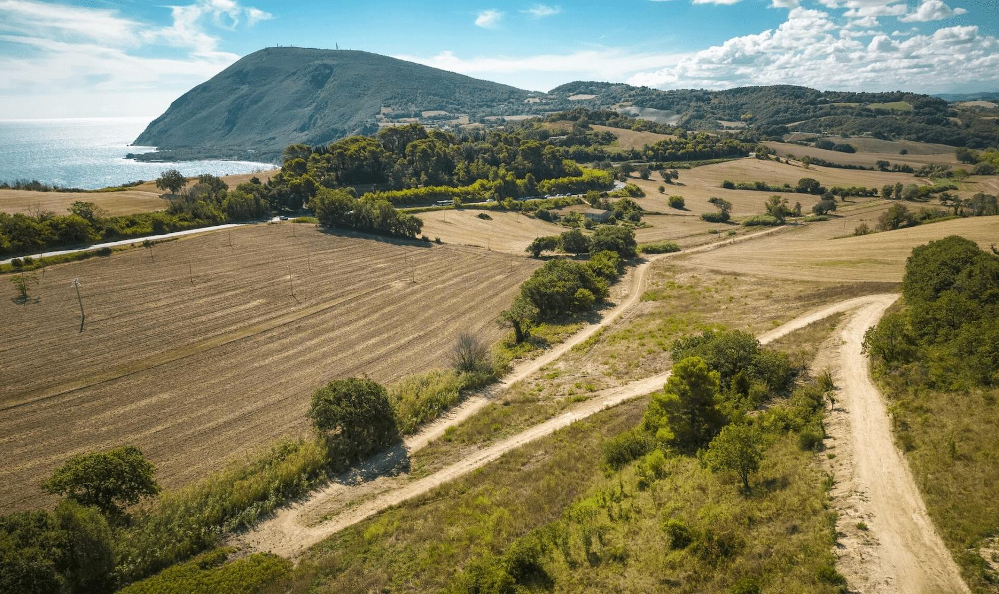
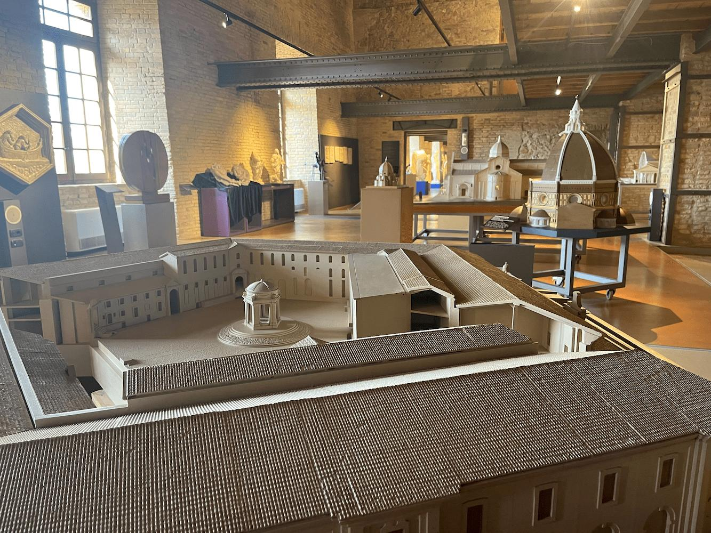
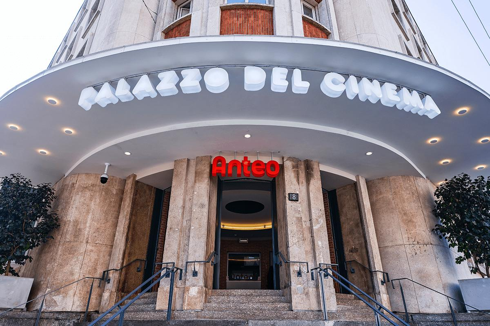
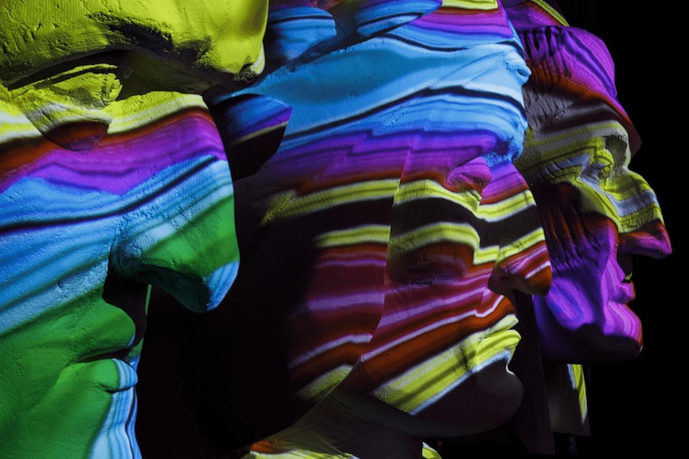
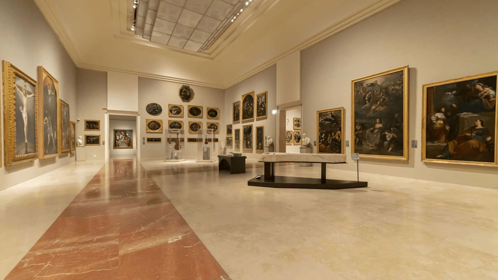

03 Portfolio
Una selezione di lavori, raccontati per intero.
Progetti pubblici e privati, dal 2015 a oggi. Sono organizzati per esperienza professionale: alcuni sviluppati dentro BAM! Strategie Culturali, altri per il Comune di Ancona, altri ancora in autonomia come libero professionista.
Clicca su ciascun progetto per i dettagli ↓
Comune di Ancona — Direzione Cultura e Turismo
Progettazione e implementazione di strategie digitali e interventi finanziati (bandi regionali e ministeriali). Redazione atti amministrativi (delibere, determine, affidamenti), gestione fornitori, coordinamento con stakeholder multi-livello.
2025—26 Bici in Comune — bando ministeriale per la mobilità ciclistica Ministeriale

Progettazione e gestione di un progetto multistakeholder a finanziamento ministeriale per iniziative a favore della mobilità ciclistica e del cicloturismo sul territorio. Coordinamento fra direzioni del Comune, partner sportivi e associazioni di settore.
2024—25 Bando Servizi Digitali Integrati — Regione Marche Regionale
Progettazione e gestione di un progetto a finanziamento regionale per l'integrazione dei servizi digitali turistici del Comune. Definizione del piano operativo, gestione fornitori e rendicontazione.
2023 La Mole è vicina — campagna promozionale per la Mole Vanvitelliana Comunale

Progettazione della campagna promozionale e strategica di comunicazione digitale per la Mole Vanvitelliana, principale spazio culturale della città. Definizione del posizionamento, dei canali e della produzione editoriale.
BAM! Strategie Culturali — Bologna
Quasi sei anni di progetti di sviluppo strategico e digitalizzazione per istituzioni di rilevanza nazionale: MiC, Regioni, enti culturali. Coordinamento stakeholder, pianificazione operativa, budgeting e monitoraggio KPI; supporto a CRM, data strategy, governance digitale.
2024—25 Anteo Cinema — CRM Strategy & Lead Generation CRM

Definizione del Data Management Plan completo per la rete Anteo. Progettazione di una campagna di lead generation con questionario interattivo e sistema di profilazione del pubblico under 25.
Strategia multicanale integrata online/offline con gamification: Instagram, newsletter, touchpoint fisici in sala. Definizione KPI e sistema di monitoraggio. Pianificazione reward e follow-up automatizzati per il nurturing dei contatti.
2023—24 Digital Library — Ministero della Cultura Ministeriale
Un percorso per sensibilizzare e supportare il settore culturale verso la trasformazione digitale. Strategia di comunicazione e funnel marketing verso istituzioni culturali italiane in dialogo con l'Istituto centrale per la digitalizzazione del patrimonio culturale.
2022—23 Teatro Regio di Torino — pubblici e data strategy Biennale
Percorso biennale per conoscere meglio i pubblici attuali del Teatro Regio, costruire una data strategy coerente e impostare i processi CRM. Analisi dei comportamenti d'acquisto, segmentazione, progettazione delle azioni di engagement.
2021—22 Regione Emilia-Romagna — campagne istituzionali su parità di genere €4.800 budget
Due campagne istituzionali di sensibilizzazione su parità di genere e contrasto alla violenza sulle donne. Strategia di digital advertising multicanale con diversificazione per piattaforma e target demografico; gestione campagne video YouTube con CPV €0,03 — 0,06; ottimizzazione continua dei target in risposta alle interazioni.
Gestione di contenuti sensibili con monitoraggio dei commenti e adattamento delle audience. Reportistica dettagliata con analisi demografica e geografica.
2022 Creative Europe Desk Italia — comunicazione digitale uffici MEDIA e Cultura UE
Affiancamento strategico della comunicazione digitale degli uffici MEDIA e Cultura del Creative Europe Desk Italia. Definizione della linea editoriale, supporto operativo, formazione interna.
2021 Masterplan Villa Reale e Parco di Monza €10.000 budget
Sviluppo delle linee guida strategiche di comunicazione contenute nel Masterplan, coordinamento del percorso partecipativo e di ascolto della cittadinanza. Comunicazione integrata di un progetto territoriale complesso e a forte impatto patrimoniale.
2021 Ravenna per Dante — celebrazioni 700° anniversario €20.000 budget

Promozione delle celebrazioni dantesche del 700° anniversario: awareness, traffico al sito, partecipazione agli eventi. Gestione campagne multicanale (Meta + Google) con obiettivi diversificati: risposte eventi (CPR €0,28), traffico sito (CPC €0,10 — 0,17), interazioni (CPR €0,004), visualizzazioni video YouTube (CPV €0,01).
Coordinamento delle partnership pubblicitarie con Biblioteca Classense e MAR. Gestione annunci dinamici Google con CTR fino al 17,20%.
2019—25 Gallerie Estensi — sei anni di digital advertising Continuativo

Gestione completa delle campagne di digital advertising per uno dei principali musei statali italiani. Pianificazione annuale, gestione budget, ottimizzazione continua, reportistica trimestrale dettagliata. Campagne per mostre temporanee, eventi speciali, promozione della collezione permanente.
La durata della collaborazione — sei anni continuativi — è la cosa di cui sono più orgoglioso di questo lavoro.
2019—21 Digital advertising per festival e rassegne Multi-cliente
Strategie e azioni di digital advertising per la promozione di progetti, rassegne e festival culturali di rilievo nazionale. Pianificazione campagne awareness e conversione, gestione budget, ottimizzazione in corso d'opera.
2021—24 Docenze e formazione per istituzioni culturali Formazione
Formazione di team di lavoro interni a istituzioni culturali su social advertising e gestione di newsletter e email marketing. Quattro percorsi formativi su misura.
Consulenza indipendente — Libero professionista
Attività consulenziale su progettazione finanziata, fundraising e strategie digitali per enti culturali e organizzazioni del terzo settore. Supporto alla definizione di piani di crescita, comunicazione istituzionale e progettazione bandi (MiC, FUS, enti regionali).
2024—25 Jonas Italia — consulenza marketing digitale e fundraising Terzo settore
Consulenza per attività di marketing digitale e fundraising. Definizione di una strategia integrata, supporto operativo alle campagne digitali, accompagnamento sulla raccolta fondi.
2022—23 Cooss Marche — campagne digital e fundraising 5x1000 Cooperativa
Consulenza su attività di marketing digitale e campagne di raccolta fondi 5x1000. Pianificazione editoriale, gestione social e definizione dei messaggi chiave per la campagna annuale.
2022 Teatro della Fortuna di Fano — progettazione bandi FUS FUS
Progettazione di bandi ministeriali FUS (Fondo Unico per lo Spettacolo): redazione tecnica, definizione del progetto artistico e di sviluppo, costruzione del piano economico-finanziario.
2021 Centro Stabile di Cultura — strategia di fundraising Fundraising
Consulenza per la definizione di una strategia di fundraising: mappatura prospect, ideazione proposte corporate, definizione del calendario annuale di raccolta fondi.
Fondazione Teatro Comunale — Bologna
Definizione di strategie di sviluppo e fundraising, gestione di progetti speciali. Gestione budget, ricerca e ingaggio prospect, ideazione di proposte corporate, sviluppo di strategie di fidelizzazione, mappatura bandi e finanziamenti, progettazione finanziata, consulenza di direzione.
Consorzio Marche Spettacolo — Ancona
Gestione della comunicazione istituzionale e dei progetti culturali del network regionale dello spettacolo dal vivo. Coordinamento di campagne a supporto del territorio, progettazione europea, gestione relazioni con enti e stakeholder, content creation e digital advertising, coordinamento attività di Servizio Civile.
Ho selezionato solo alcuni progetti di quelli che ho seguito in questi anni, altri sono ancora in corso. Se vuoi parlarne, scrivimi.